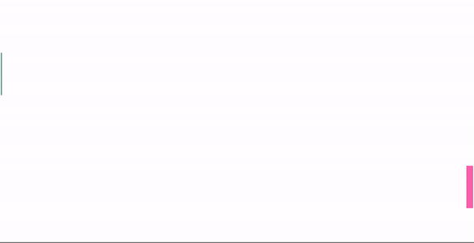

Assignments > Tutorial 9: Make some algorithmic art
Due on Fri, 04/07 @ 11:59PM. 6 Points.
The goal of this tutorial is to get you more comfortable working with loops and conditional statements.
LEARNING OBJECTIVES:
- Practice working with loops
- Practice working with if statements
- Practice working with JavaScript’s built-in Math.random() module
Part 1: Loop Art
Preview
artwork/index.html in
the browser, and then refresh the page a few times. Note
that each time the screen is redrawn, the circle appears in
a different location and has a different size and shape.
This effect is achieved using the random function:
About the Math.random() function
Math.random() returns
a value between 0 and 1. This value can then be multiplied
by some number to be more useful. For instance, if I wanted
a random number between 0 and 500, I would issue the
following statement (try it out in the JavaScript console):
const randNum = Math.random() * 500;
I could also be a little more creative to further control the range of numbers returned:
// give me a number between 300 and 500:
const randNum1 = Math.random() * 200 + 300;
// give me an integer between 300 and 500:
const randNum2 = Math.floor(Math.random() * (200 + 1)) + 300;
// make a function that returns a decimal number
// between a and b (decimals are sometimes called "floats" in computer science):
function randomFloat(min, max) {
return Math.random() * (max - min) + min;
}
// make a function that returns an integer between a and b:
function randomInt(min, max) {
return Math.floor(Math.random() * (max - min + 1)) + min;
}
Your Job
In artwork/sketch.js,
take a look at lines 22-25 (which are responsible for
creating the randomly sized and positioned circle). Then,
using any kind of loop you want, try making 1,000 randomly
generated circles. When you’re done, experiment with the
following techniques to make some algorithmic, abstract art:
-
Try creating other random shapes (squares, lines,
triangles, etc.) within your loop. There is some sample
code (commented out) at the bottom of
sketch.jsthat you can experiment with (but note that you have to move the relevant function invocations inside of the setup function for them to work). -
Try making each shape a different color. Consider
picking a random color from the
colorspalette (and feel free to change the colors / add more colors). -
See if you can animate some of the shapes by moving some
of your code into the
draw()function.
I have included some sample drawings below to give you some ideas:
Part 2: Animation
Open the
cars/sketch.js file
and examine the starter code. Some things to note:
-
I have created a
drawCar()function for you, which draws a car of any position, size, and color, depending on the values passed into the function as arguments. -
I have also created a “state object” called
c1that keeps track of the data values for the car. You can create additional state objects to keep track of additional cars. -
Some brief reminders about
p5.js:-
It requires us to define a
setup()function to define the canvas we’ll be using for our animation. -
It also allows us to define an optional
draw()function, which will be invoked in p5’s built-in animation loop. Everything inside ofdraw()will be called over and over again as part of the animation loop.
-
It requires us to define a
-
Within the
draw()loop, I have already started animating the pink car. Your job will involve enhancing this code so that it looks like the one in the animation below.

Your Job
-
Currently, the pink car moves very slowly. Make it move
at a reasonable pace by modifying the data in the
c1object at the top of the page. -
If the pink car gets past the end of the screen, it
should seamlessly be moved to the beginning of the
screen, so that it looks like it’s wrapping around.
- Hint: You will need to use an “if statement” within the draw loop that checks if the car’s position has reached the end of the screen. If it has, you’ll update the car’s position so that it “jumps” back to the beginning again.
-
Next, add a second car to your animation, which should
move in the opposite direction, and also loop back
around when it gets to the end of the screen (see the
animated gif). To do this:
-
Copy the
c1object, paste it below the first one. Rename the copied object toc2.This newc2state object will help you animate a second car. -
Within the
draw()function, add anotherdrawCar()function call, but using the c2 object to position the car. - Note: the cars don’t have to be the same size or go the same speed.
-
Copy the
Optional enhancements (extra credit)
The more you practice, the better you’ll get!
- [1pt] Add a third car with a different position, size, and color (and make sure it also wraps around when it gets to the end).
-
[2pts] Create a
drawTruck()function that draws a truck. Then add the truck to your animation (in addition to the 2 cars and make sure it also wraps around when it gets to the end). - [1pt] Make the cars accelerate over time (start off slow and gradually move faster).
-
[2pt] Add your creature to your
animation:
-
Inside
helpers.py: -
Add your
drawCreaturefunction definition (adapt from Homework 3). -
In
cars/sketch.js: animate your creature
-
Inside
- [3pt] Add one of your classmate’s creatures to your animation, and complete the steps from #2 directly above.
What to Submit
Please Read Carefully: To submit Tutorial 9, please paste the following links into the Moodle under the Tutorial 9 submission section:
-
A link to your homepage on GitHub
pages, which should link to:
- Your artwork page
- Your animation page
- A link to your GitHub code repository (where your code files are stored).
See Sarah’s homepage for an example.